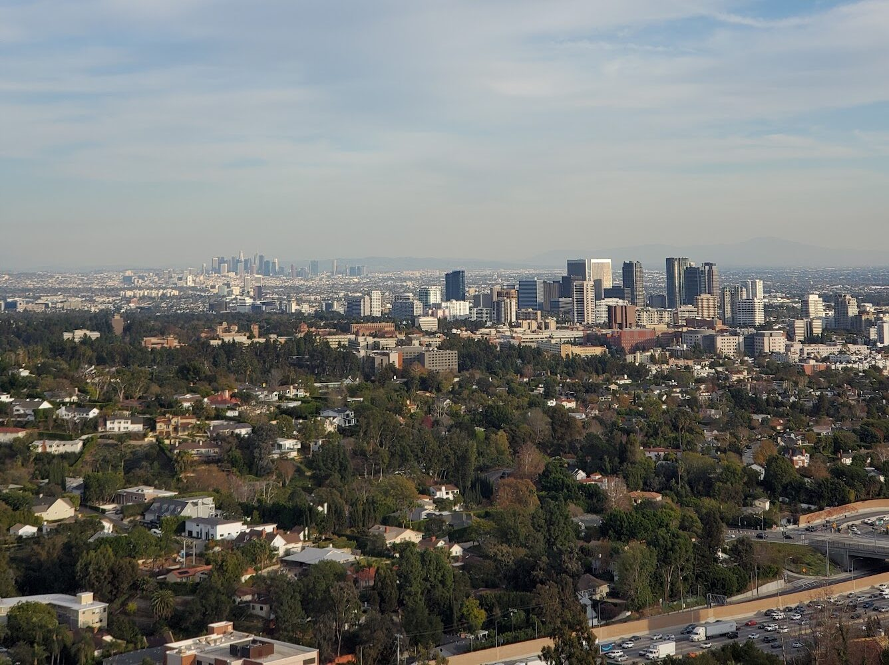

Los Angeles is arguably ground zero for America’s housing crisis. Housing affordability is largely a function of wages and housing costs, and, for a variety of reasons, the Los Angeles metro area has the most unfavorable affordability profile of any of the country’s largest metros. The median home listing price is over $1.1 million, while median household income is around $92,000.1
None of this is likely surprising to anyone interested in becoming a homeowner in LA. If you drive around much of the Los Angeles metro area, you see mostly detached single-family homes outside a handful of neighborhoods. Within the City of Los Angeles, the prevailing pattern is familiar: commercial corridors and larger apartment buildings along arterial streets such as Wilshire, La Brea, Ventura, and Fairfax, surrounded by residential neighborhoods with a mix of detached homes and small multifamily buildings.

Much of that small multifamily stock is old, and in many places it is visibly rundown. Yet relatively little new multifamily construction appears outside the main arterial corridors.
So why does this development pattern persist when Los Angeles plainly needs more housing?
You might assume it comes down to zoning, and that is partially true. Zoning does determine where apartments can be proposed, how much can be built, and which projects require exceptions. But zoning permission alone is not enough. A project can comply with the applicable zoning and still enter a long and costly discretionary approval process.
The City’s own Housing Element identified potential capacity for 230,947 housing units in its existing site inventory, with no zoning changes required.2 The current zoning map contains substantial theoretical capacity, and yet actual housing production remains painfully slow.
Consider what happens when a developer tries to build a six-story, 80-unit apartment building in the City of Los Angeles.
First, the developer needs to secure a suitable parcel and arrange financing. Once the developer controls the site, carrying costs begin to kick in and stack up: interest, taxes, insurance, architects, consultants, attorneys, and the basic cost of dumping a bunch of capital into a project that is not yet producing income. Delays can arise for all sorts of reasons, including contractor problems, financing complications, and material shortages. But the approval process can create its own delays long before construction begins.
Under the Los Angeles Municipal Code, a residential project with 50 or more dwelling units generally requires Site Plan Review. Think of this as one additional step, even if the zoning otherwise allows the building to be constructed. There are exceptions, including for certain affordable-housing projects. Site Plan Review requires a discretionary decision by the mayor-appointed Director of Planning. The Director may require a hearing when a project may significantly affect neighboring properties, and the resulting determination may be appealed. And that is before getting into the California Environmental Quality Act, or CEQA, which can add another layer of review.3
Not every Site Plan Review case reaches the City Planning Commission (CPC). But once a project enters discretionary review, it becomes more vulnerable to hearings, appeals, public opposition, and the simple passage of time.
At this point I want to shout out a new paper by Stuart Gabriel, Edward Kung, and M. J. Histen. Their study, “How Bureaucratic Capacity Shapes Regulatory Outcomes: Evidence from Land Use in Los Angeles,” looks at how the City actually processes development proposals once they enter this weird discretionary-approval limbo.
What they found is that the Commission rarely kills projects outright. Only around 1 percent of cases were straight-up denied. But 122 cases were delayed to future hearings. Among delayed projects that later received a final decision, the average time from the first observed delay to resolution was 105 days, and most returned without meaningful changes to what they had originally requested.4
Parking, noise, traffic, displacement, design, and environmental impacts are worth discussing, and in the case of some developments they may be valid concerns. The paper does not establish that any particular objection was frivolous, or that public opposition alone caused a delay. But, holding other observed project characteristics constant, more written opposition was associated with a greater likelihood of delay. A doubling in opposition letters was associated with roughly 17 percent higher odds of delay.4
This matters because delays are expensive. The median development-approval timeline for multifamily projects in Los Angeles was 524 days, days in which developers carry land, financing, and professional costs without receiving revenue.5
Everyone knows that projects get delayed in California. Financing falls through. Materials arrive late. Contractors miss deadlines. Utilities need to be connected. Lawsuits can drag on. Some of those delays are unavoidable, and some exist for good reasons.
But the delays documented by Gabriel, Kung, and Histen are a particularly stupid kind of delay. These are projects that reach the CPC, wait months, and then often return with little or nothing changed before eventually being approved anyway. The delay does not necessarily produce a safer building, a better design, or more affordable housing. It can simply make the project more expensive to build.
This, in my opinion, creates a large but invisible financial incentive for developers to favor projects with more predictable approval processes. The paper does not prove that a project on Crenshaw or La Brea will automatically receive faster approval than that same project elsewhere. But it does help explain why developers may prefer locations where multifamily housing is already familiar, entitlement pathways are clearer, and political opposition is easier to anticipate.
That is the point. Los Angeles does not always stop housing by rejecting it. It often stops housing by making totally legal projects slow and expensive enough to change what developers are willing to attempt in the first place.
In another paper, Gabriel and Kung estimate that cutting approval times by 25 percent would have increased multifamily housing production by 12.7 percent between 2010 and 2022, simply by pulling forward the completion of projects already underway. Applied to the 71,532 units completed in their sample, that amounts to roughly 9,100 additional homes completed within the period.6
Faster approvals would not solve Los Angeles’s housing crisis on their own. Zoning, construction costs, financing, infrastructure, labor, and affordability all still matter. But the evidence suggests that approval delay is a serious constraint on housing production, even if a project is totally legal.
- Realtor.com Economic Research, “Metro Report Cards: Top and Bottom of the Class for Homebuilding and Affordability” (2026). ↩
- City of Los Angeles, 2021–2029 Housing Element, Chapter 4, “Adequate Sites for Housing.” ↩
- Los Angeles City Planning, “Site Plan Review Instructions and Checklist”; Los Angeles City Planning, “Planning Entitlement Appeals”; California Governor’s Office of Land Use and Climate Innovation, “CEQA: The California Environmental Quality Act.” ↩
- Stuart Gabriel, Edward Kung, and M. J. Histen, “How Bureaucratic Capacity Shapes Regulatory Outcomes: Evidence from Land Use in Los Angeles,” September 17, 2026. ↩
- Stuart Gabriel and Edward Kung, “Development Approval Times and New Housing Supply: Evidence from Los Angeles,” revised working paper, UCLA Anderson School of Management, 2026. ↩
- Ibid. The 12.7 percent estimate reflects the effect of faster approvals in pulling forward completion of projects already underway. The paper reports a larger 23.7 percent estimate when also accounting for approval times’ effect on new-project initiation. ↩